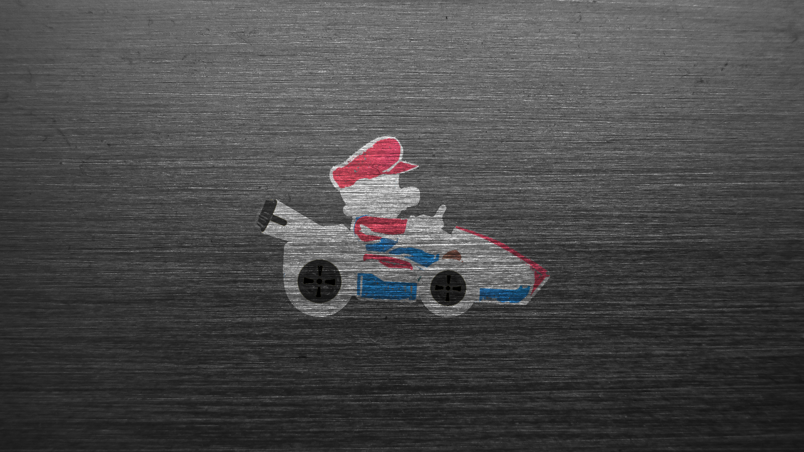
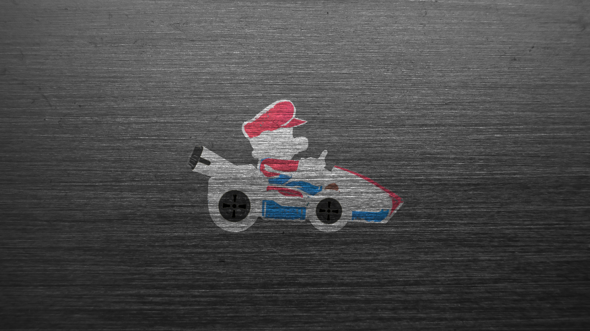

A Little Bit About Me
Well uhhh... Where to start?
Oh yea! The gallery at the top.
Those are just some of my finest pieces of work. Hope you like 'em! I made them using reference images and Adobe Photoshop. Not for any professional project. Just for funsies. Some of them were much more difficult to make than others, but all of them (in my humble opinion) turned out great. I use this same gallery as my desktop wallpaper! If you right click an image and click Open Image in New Tab, then you can see it in its full resolution and glory! They're all in reference to something... Except for the tiger. I just like tigers.
Hmmm... What else should I write here?
Well, I hope you've read some of my articles. They're pretty cool. Oh! I also hope you played my little game and found the star. Don't get angry with me about that "the cake is a lie" type of reward! I genuinely like that song OK? It's really good. Just like my articles.
Guess I should put some of my professional experience on here.... Aside from those articles, all of which have been published (the news articles were removed due to the site management deciding to not do news anymore), I also have tons of experience with technology. Hardware and software. I'm a computer whiz. Just look at this super cool site I just whipped up! All coding baby, no shortcuts. Completely customizable. Beautiful. Not to mention that super sick gallery slider at the top. Amazing. Oh, I've also hosted, produced, and edited a podcast. If you want my resume of something, feel free to email me. You can get my email from this page.
I wanna say a few things about me personally. I'm just a dude. I love gaming. Not just from a playing perspective. I have spent a fair share of time learning how to make 'em. Working on my first big project right now. It's just me and my friend, just for funsies, but its still gunna be good. Years away from finishing though. Whatever, it'll get done.
Same thing goes for film and television. I not only appreciate it from a consumers perspective, I also love reading and watching behind the scenes. Learning about cinematography, film scores, and acting along the way. If you're looking for a good behind-the-scenes, I recommend The Lord of the Rings trilogy special features. They're amazing.
This is getting repetitive real fast..... But the same is applied to books as well. I not only just read books but have scoured forums and papers about character development, story progression, and world building. It's all just fascinating to me. I love learning about things. About getting to the core of something. The thing that makes it tick. Like the gears of a clock. Or the code of a video game. Really fascinating stuff......
Well, that's a lot of text. Definitely filled the page out. Looks good. I think I'll end it here. Thanks for visiting my site and I hope you shoot me an email about opportunities we can explore together! Or just email me about whatever, I don't really mind. I'll probably respond either way.